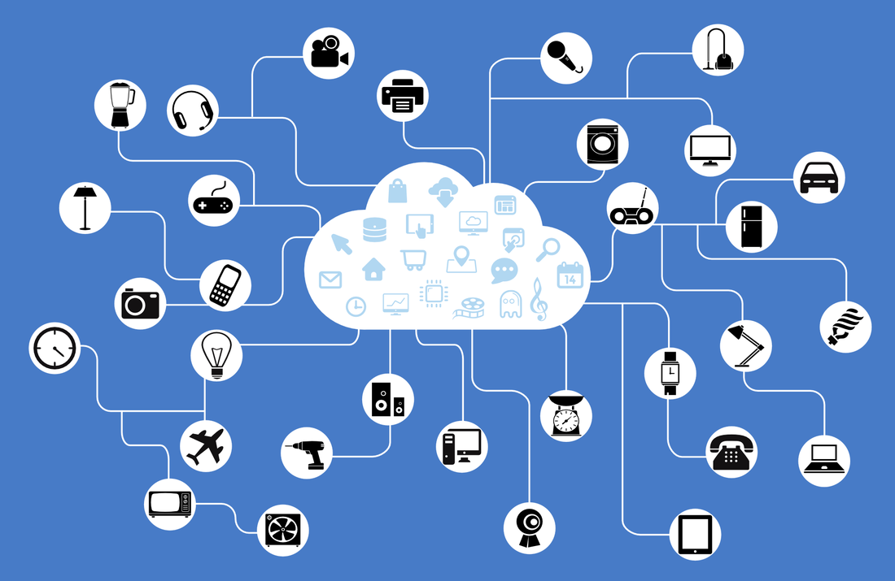

The Internet of Things is something that performs a function or service and can be turned on or have a sensor installed.
Some examples of Internet of Things are smart thermostats, Philips-Hue Bulbs, Apple Watch and HomeKit, Smart Refridgerator, Smart Phones, Smart Cars, and Google Glass.
Back